GREEDY
- in ogni passo scegli la soluzione migliore a breve termine (la scelta locale ottimale), sperando che porti anche alla soluzione globale ottimale.
Interval scheduling
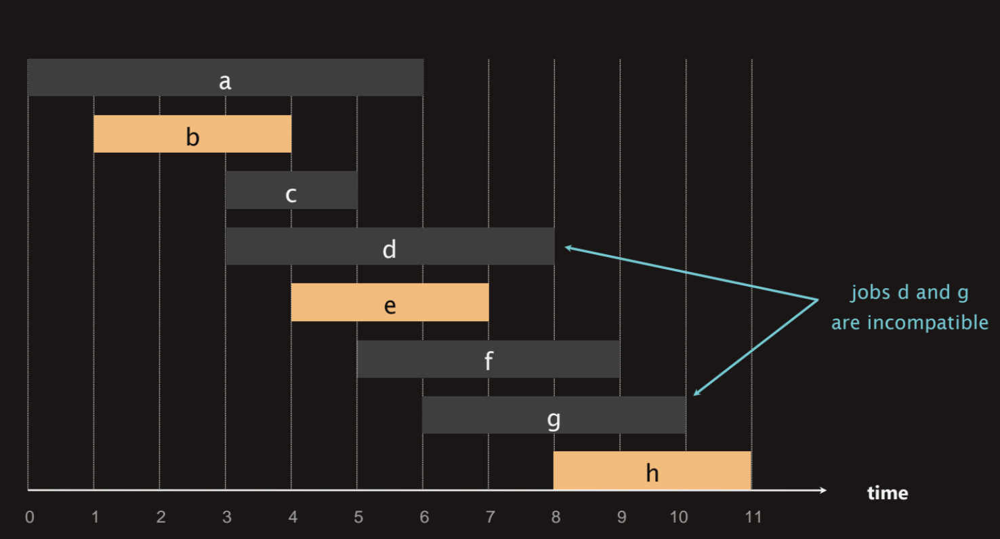
definizione
- Dati in input n intervalli:
- ha tempo di inizio e tempo di fine
- Due intervalli sono compatibili se non si sovrappongono
- Trovare il sottoinsieme di intervalli compatibili con cardinalità massima
Soluzione greedy
- ordina gli intervalli per tempo di fine
- Complessità: 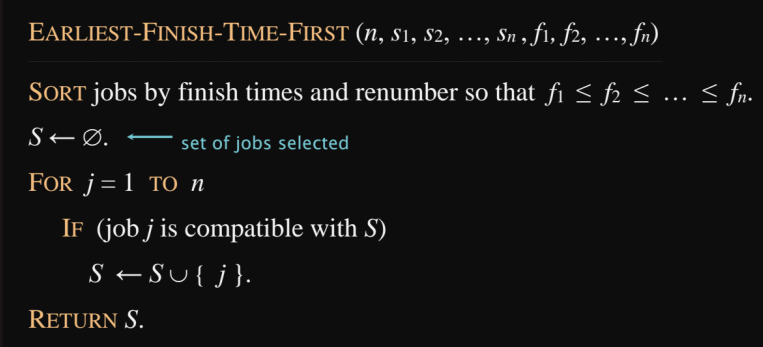
Teoremi
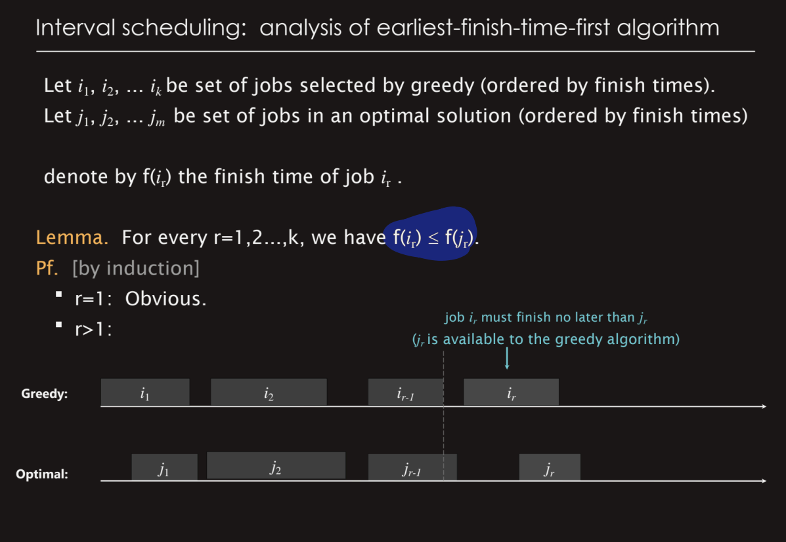 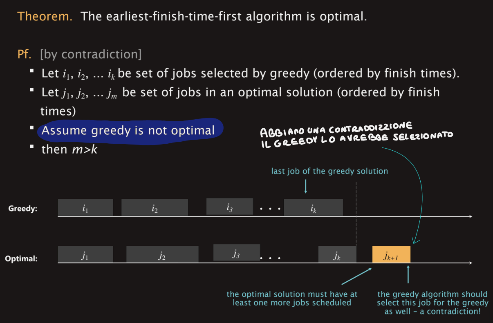
Interval partitioning
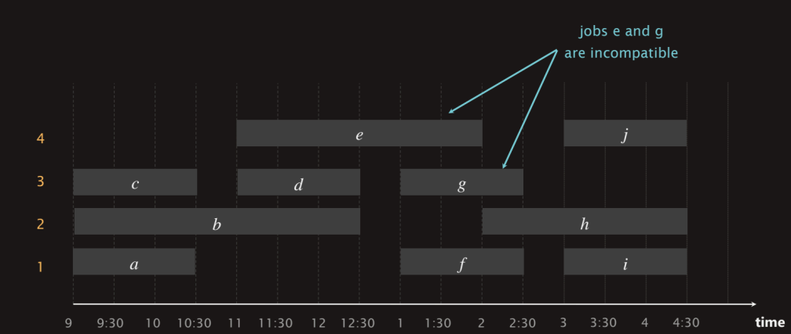
definizione
- Dati in input un insieme di intervalli (lezioni):
- Lezione inizia a e finisce a
- Trovare il minimo numero di classi per schedulare tutte le lezioni affinché non ci siano due lezioni contemporaneamente nella stessa classe( ovvero le lezioni nella stessa classe devono essere compatibili)
Soluzione greedy
- ordina per tempo di inizio
- Complessità: 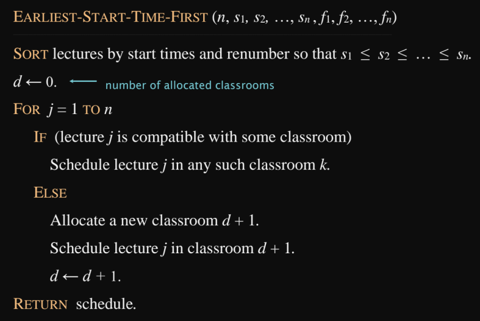
Teoremi
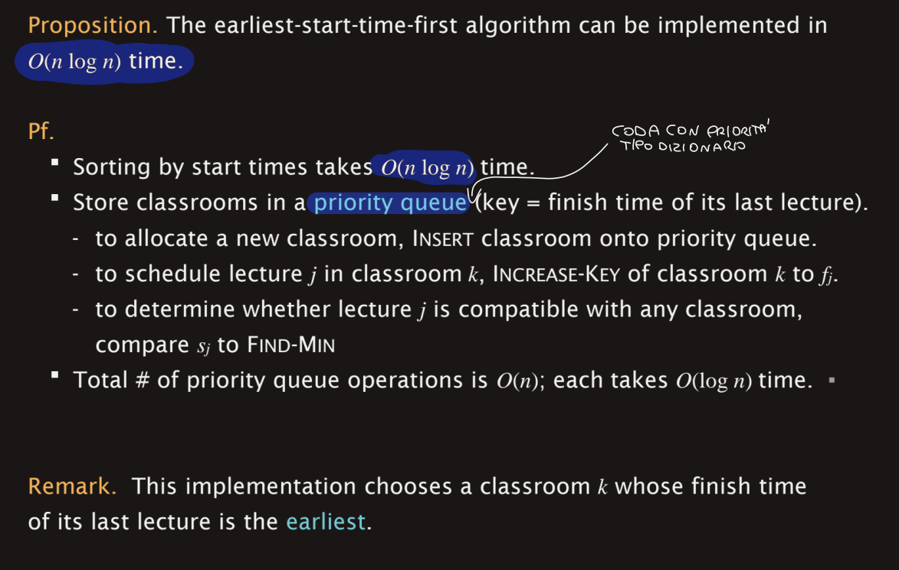 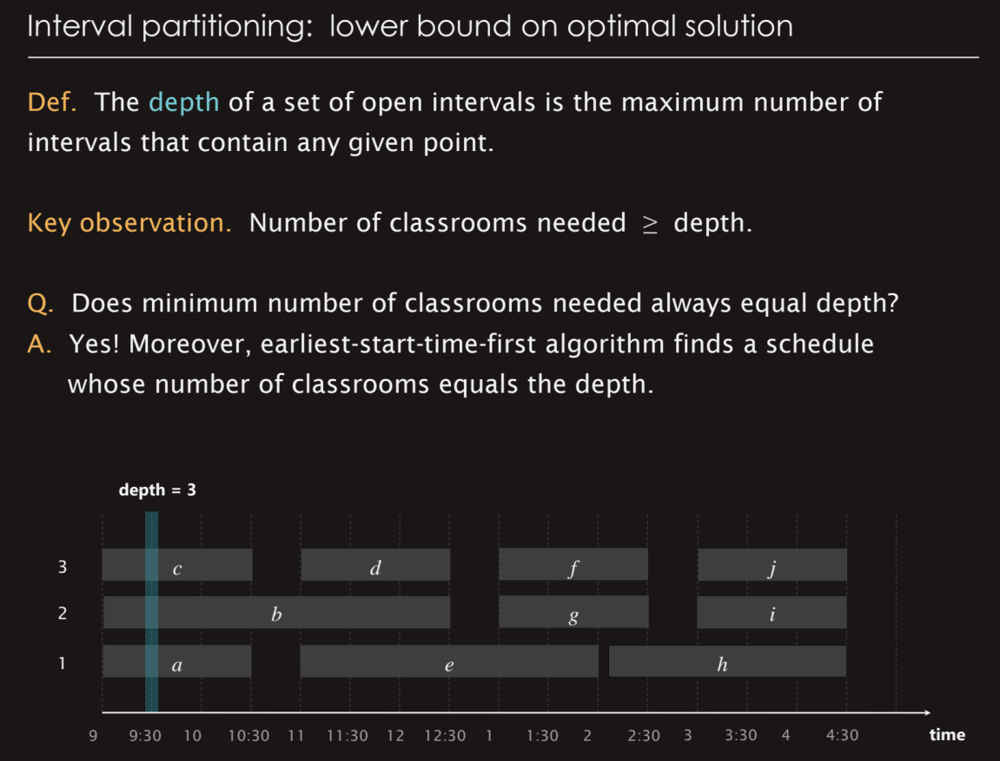 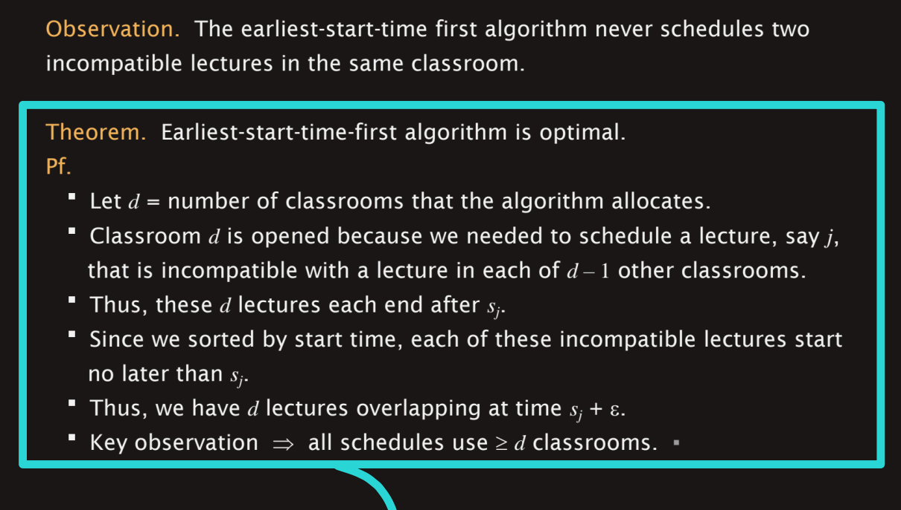
Union Find Struttura dati
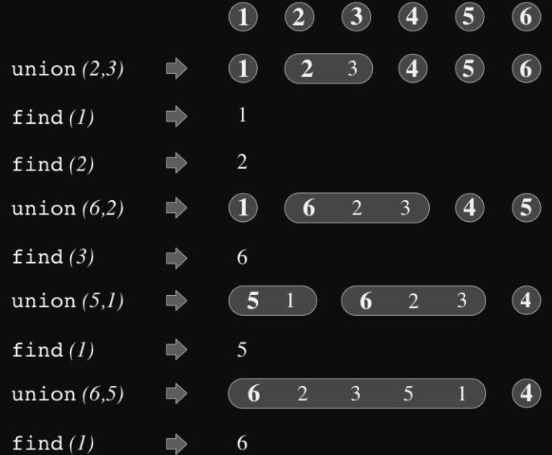
definizione
- Mantenere una collezione di insiemi disgiunti contenenti elementi distinti durante l’esecuzione di una sequenza di operazioni del seguente tipo:
Makeset(x)= crea il nuovo insiemex = {x}di nomexUnion(A,B)= unisce gli insiemiA, Bin un unico insieme di nome A (distrugge quelli vecchi)Find(x)= restituisce il nome dell’insieme che contiene l’elementox(si suppone di accedere direttamente all’elementox)
QuickFind
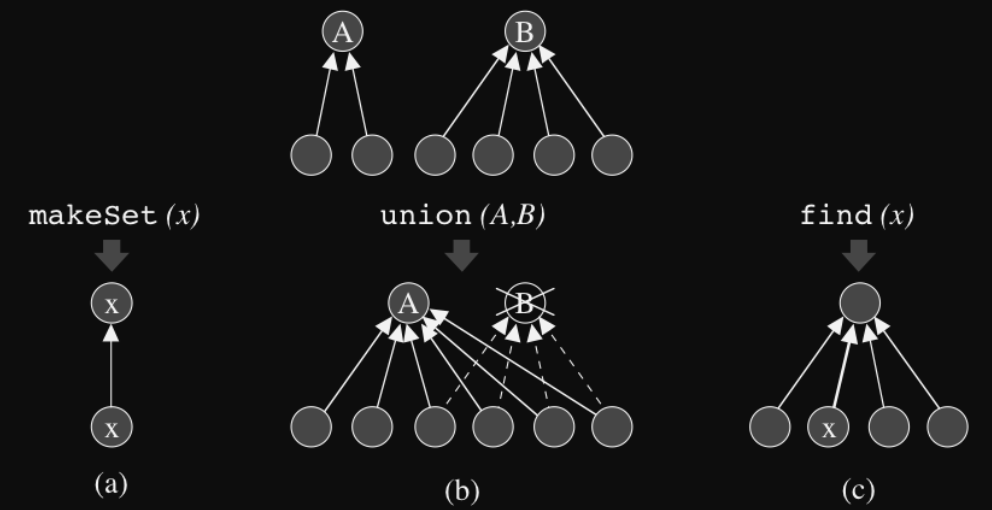
Usiamo una foresta di alberi di altezza 1 per rappresentare gli insiemi disgiunti. In ogni albero:
- Radice = nome dell’insieme
- Foglie = elementi ( incluso l’elemento rappresentativo, il cui valore è nella radice e da il nome all’insieme stesso)
Implementazione delle varie operazioni
Makeset(elem e)- Crea un albero composto da due nodi: una radice e una foglia. Memorizza e sia nella foglia che nella radice come nome dell’albero
Union(name a, name b)- Sostituisce tutti i puntatori delle foglie di B alla radice di B con puntatori alla radice di A. cancella la vecchia radice di B.
Find(elem e) --> name- Accede alla foglia x corrispondente all’elemento e. da tale nodo segue il puntatore al padre che è la radice dell’albero e restituisce il nome memorizzato in tale radice
QuickFind bilanciato
troppi cambi di puntatori con troppe union fanno venire un costo complessivo di
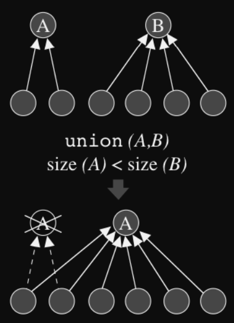
- Union by size
- Nell’unione degli insiemi A e B attacchiamo gli elementi dell’insieme con cardinalità minore a quello di cardinalità maggiore e se necessario modifichiamo la radice dell’albero ottenuto
- si ottiene complessità
Teoremi
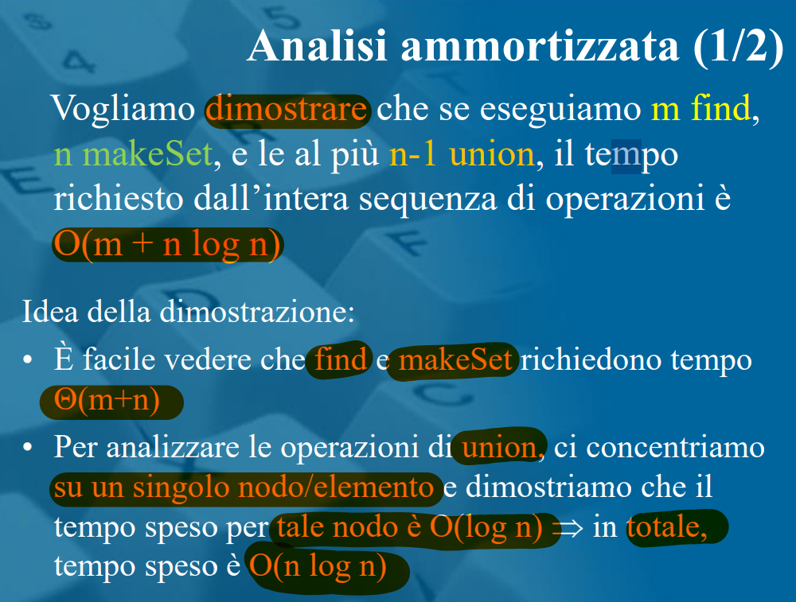 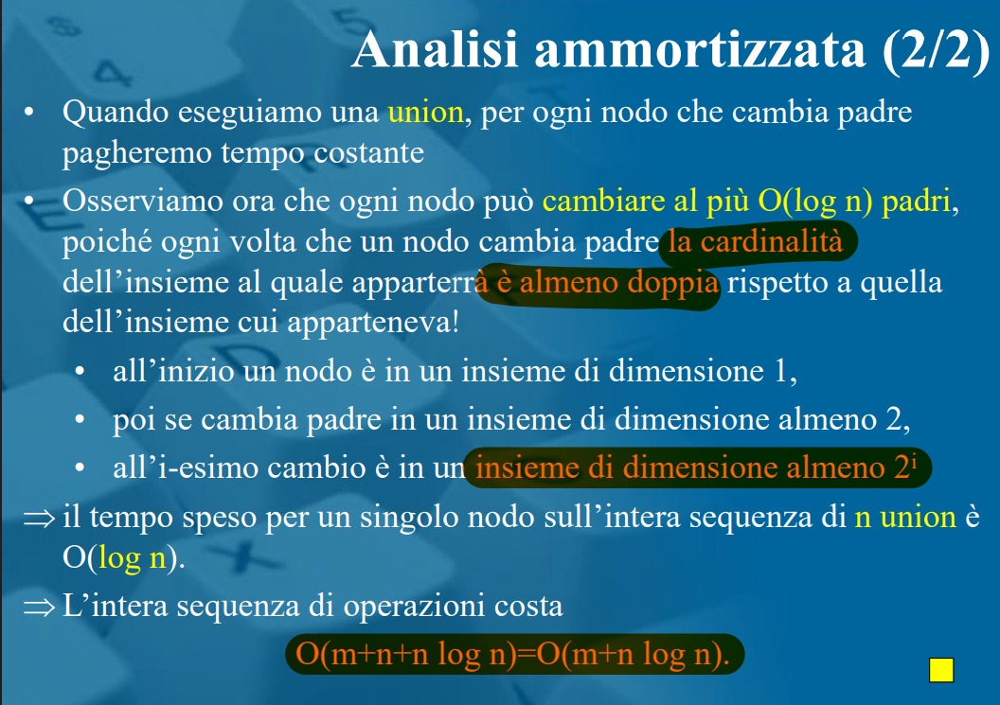
QuickUnion
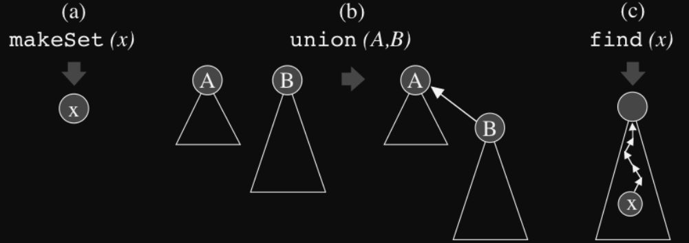
definizione
Usiamo una foresta di alberi di altezza anche maggiore di 1 per rappresentare gli insiemi disgiunti. In ogni albero:
- Radice = elemento rappresentativo dell’insieme
- Rimanenti nodi = altri elementi( escluso l’elemento nella radice)
Implementazione delle varie operazioni
Makeset(x)Union(A,B)Find(x)
QuickUnion con Union-By-Size
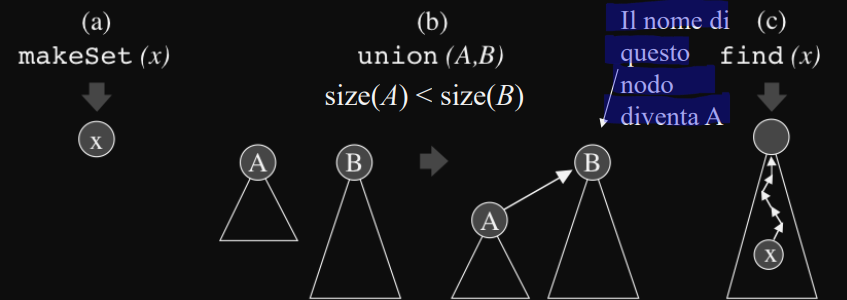
- la find costa per risolverlo applichiamo l’euristica UBS Nell’unione degli insiemi A e B, rendiamo la radice dell’albero con meno nodi figlia della radice dell’albero con più nodi e cambiamo il nome se necessario
- L’operazione find richiede tempo
QuickUnion con Union-By-Size+ Compressione dei Cammini
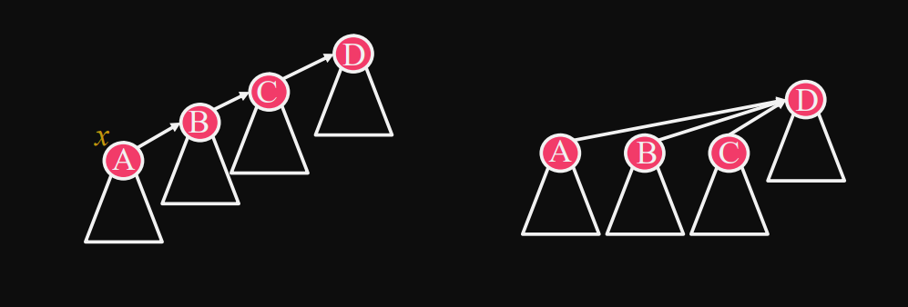
- Quando eseguo find e attraverso il cammino da x alla radice, comprimo il cammino, ovvero rendo tutti i nodi del cammino figli della radice
Minimum spanning tree
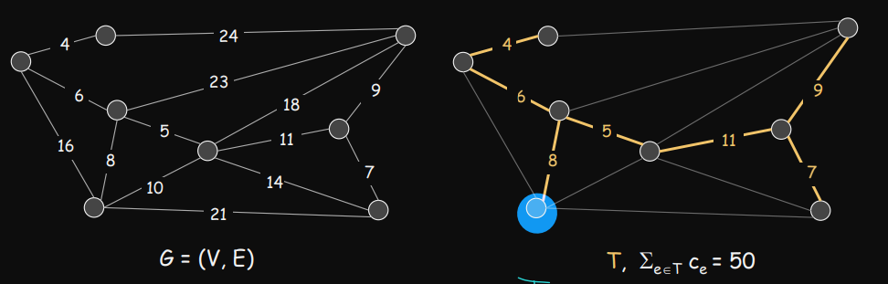
definizione
- Dato un grafo connesso e non orientato , pesato sugli archi.
- un MST è un sottoinsieme di archi tale che ci sia
- uno spanning ovvero un albero (V,T) connesso e aciclico che include tutti i nodi di V
- e un minimum ovvero il peso totale, ovvero la sommatoria di tutti gli archi di T sia minimizzata
definizioni
- Ciclo: set di archi della seguente forma:
- Cut: Partizione sui vertici che forma due insiemi disgiunti e
- Cutset: associato a un taglio abbiamo un cutset che è un sottoinsieme di archi con esattamente un nodo in e l’altro in
Proprietà
-
- Se ha pesi distinti allora esiste un unico MST
-
- Cycle-cut intersection
- L’intersezione tra un cutset e un ciclo ha cardinalità pari
- Il motivo è geometrico: un ciclo non può “entrare” in una parte del grafo senza poi “uscire” lo stesso numero di volte, altrimenti non riuscirebbe a richiudersi.
-
- Cut property
- Sia un qualunque taglio e sia l’arco del cutset dal costo minimo rispetto agli archi che attraversano quel taglio
- Allora esiste un MST che contiene e
-
- Cycle property
- Sia un qualsiasi ciclo e sia l’arco appartenente al ciclo di peso massimo. rispetto agli archi che appartengono a quel ciclo
- Allora esiste un MST che non contiene f
Teoremi
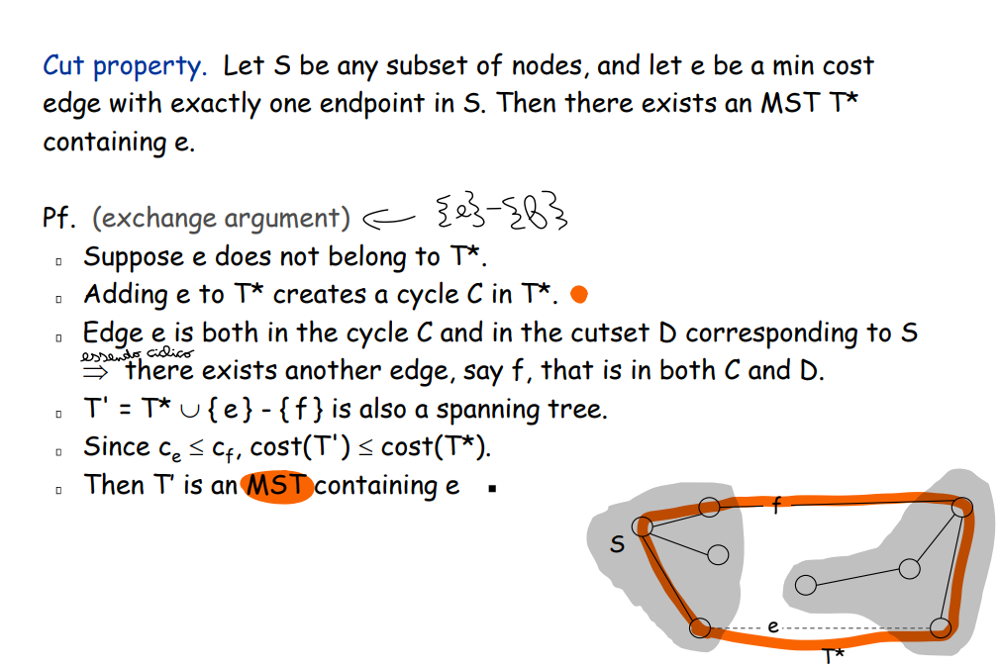 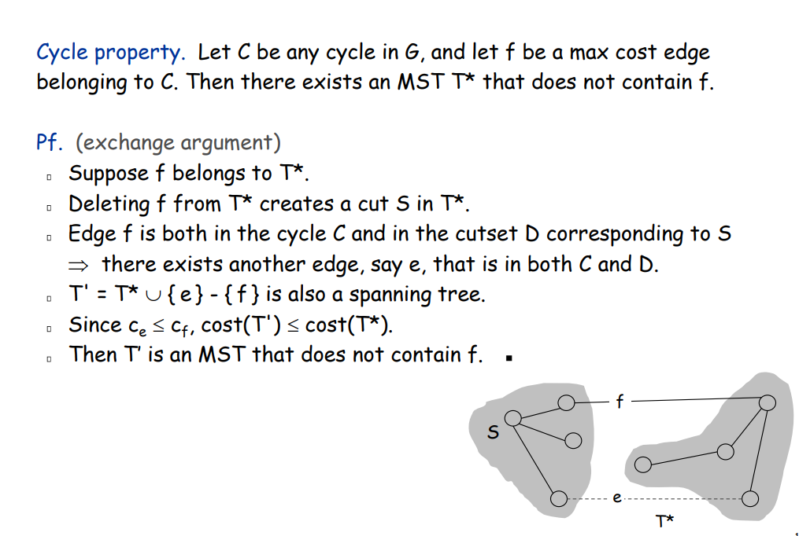
Kruskal
- algoritmo che risolve MST
- si basa sulla cycle property
definizione
- Inizia con , considera gli archi in ordine crescente di peso, viene inserito l’arco a se non genera un ciclo
- Un implementazione efficiente di questo algoritmo utilizza la UnionFind
- Funziona ordinando tutti gli archi in ordine crescente di peso e vengono aggiunti uno alla volta se non creano cicli.
- Qui entra in gioco la Cycle Property: se un arco è il più pesante in un ciclo, non serve prenderlo. Kruskal infatti “scarta” implicitamente questi archi perché, quando un arco formerebbe un ciclo, non lo aggiunge.
Soluzione greedy
- tempo 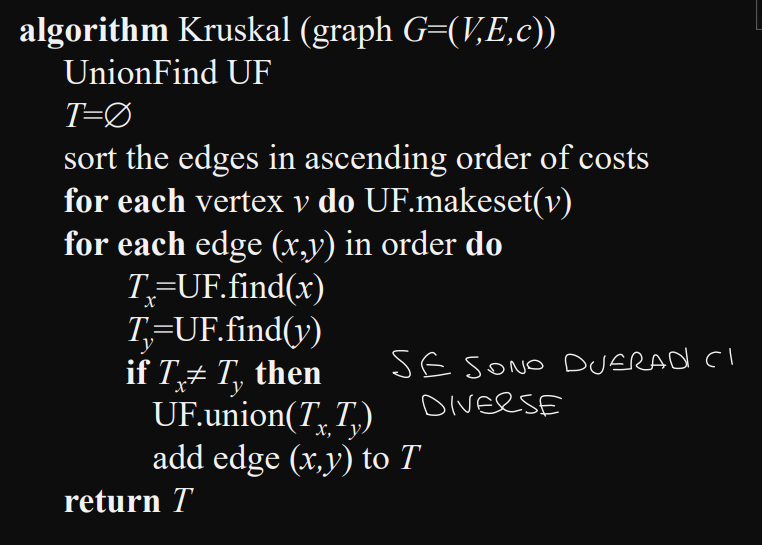
Teoremi
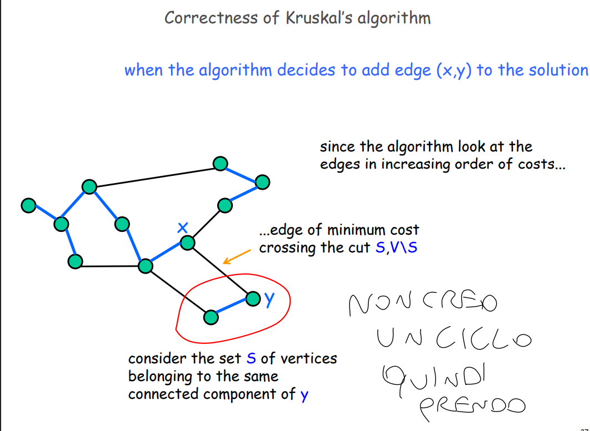 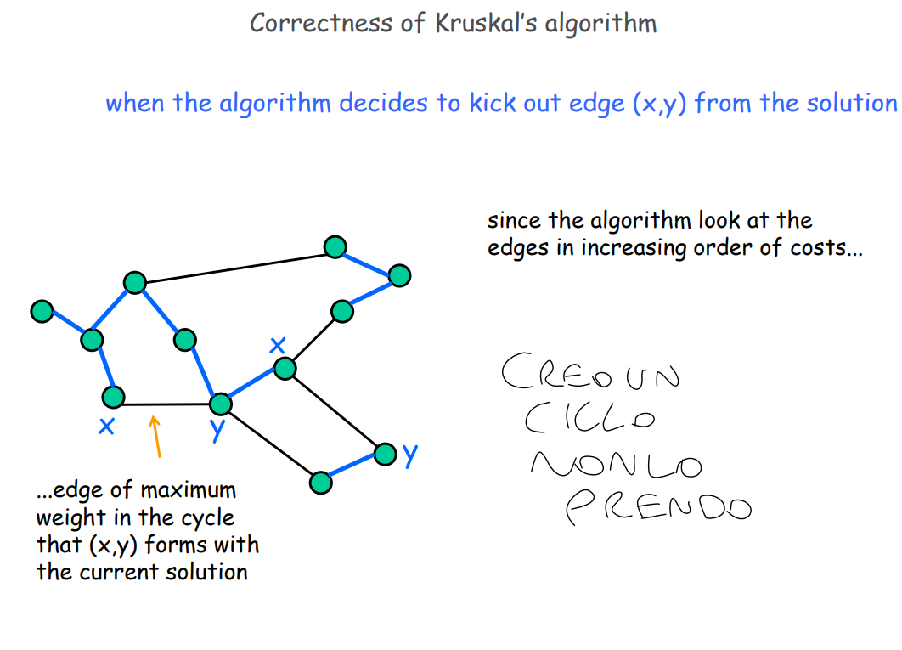 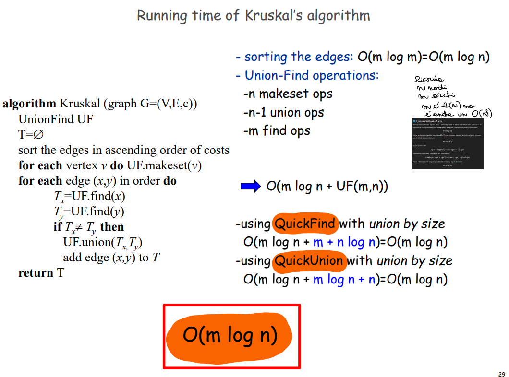
Correttezza di Kruskal
-
Cut property
- Dato un qualsiasi cut (partizione dei vertici in due insiemi), l’arco di peso minimo che attraversa quel cut appartiene a tutti gli MST.
- Quindi, se prendiamo gli archi in ordine crescente, ogni volta che troviamo il più piccolo che connette due componenti diverse (cioè non crea ciclo), stiamo proprio scegliendo un “arco minimo di un certo cut”.
- Questo garantisce che quell’arco deve stare in almeno un MST → la scelta è sempre “sicura”.
-
Cycle property
- In un ciclo, l’arco di peso massimo non appartiene a nessun MST.
- Quindi, se durante l’algoritmo troviamo che un arco crea un ciclo, essendo l’ultimo che stiamo considerando (quello di peso maggiore nel ciclo, dato che stiamo andando in ordine crescente), possiamo scartarlo con certezza.
-
ogni arco aggiunto è giustificato dalla cut property,
-
ogni arco scartato è giustificato dalla cycle property.
Reverse-delete algo
definizione
- Si comporta in modo complementare all’algoritmo di Kruskal:
- Parte con , considera gli archi in ordine decrescente di peso, l’arco viene rimosso solo se rimuovendolo il grafo resta connesso
Prim
definizione
- Inizia da un nodo radice e fa crescere un albero in modo greedy da verso l’esterno, ad ogni passo aggiunge a l’arco meno costoso che ha esattamente un estremo in
Soluzione greedy
- Mantiene l’insieme dei nodi esplorati
- Usa una coda con priorità per mantenere i nodi inesplorati
- Per ogni nodo inesplorato la priorità è l’attachment costo dell’arco meno costoso incidente a che ha l’altro estremo in
- Parte da un nodo e costruisce l’albero estendendolo passo passo.
- Ad ogni passo sceglie l’arco più leggero che attraversa il taglio tra i vertici già inclusi e quelli ancora fuori.
- Qui si usa la Cut Property: l’arco più leggero che attraversa un taglio appartiene sempre a qualche MST, quindi è sicuro includerlo. 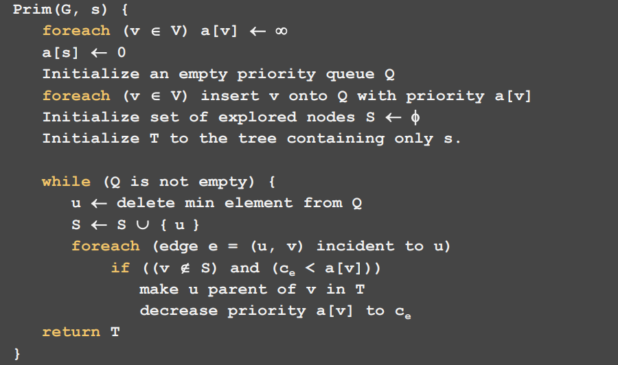
Clustering
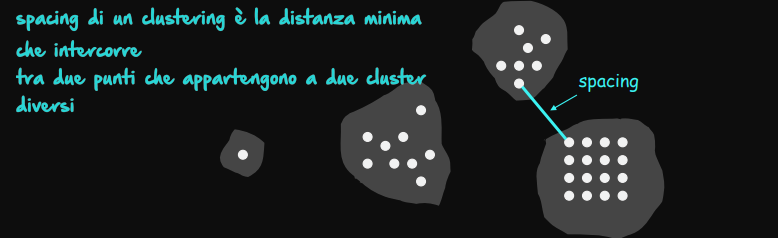
definizione
- Dato un insieme di elementi etichettati e un intero , dividere gli oggetti in sottoinsiemi non vuoti affinché lo spacing sia massimo
- Spacing = distanza minima tra una qualsiasi coppia di punti in cluster diversi
- La distanza viene espressa da una funzione 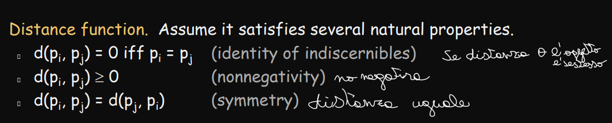
Soluzione greedy
- La procedura è corrispondente all’algo di Kruskal, solo che poi bisogna togliere i archi più pesanti dal grafo 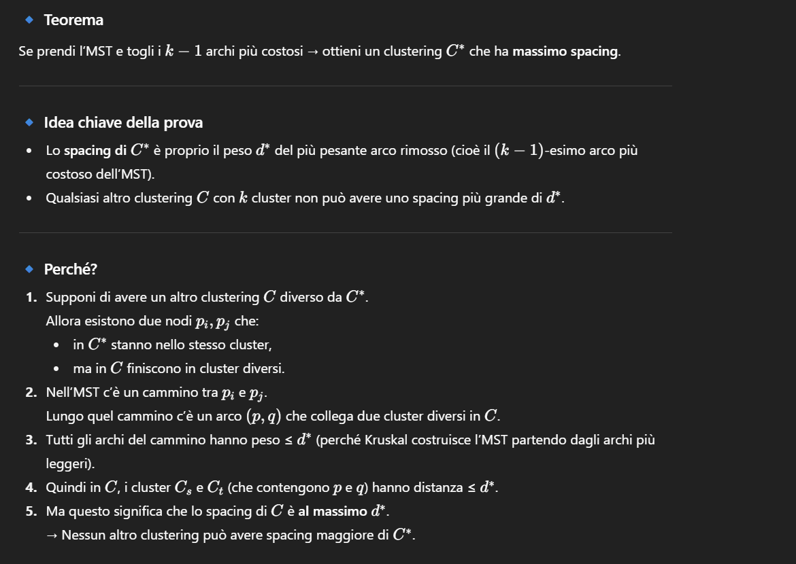
Programmazione dinamica
- dividi il problema in sotto-problemi sovrapposti e usa i risultati salvati (memoization/tabulation) per evitare ricalcoli.
Independent Set
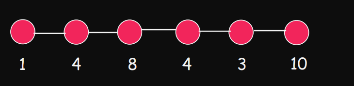
definizione
- Dato un cammino di nodi. Ogni nodo ha peso
- Trovare un insieme indipendente di peso massimo ovvero un insieme tale che:
-
- è un insieme indipendente
-
- dei pesi dei nodi in , è più grande possibile
-
- Un insieme indipendente di è un sottoinsieme di nodi che non contiene due nodi adiacenti, ovvero per ogni coppia di nodi del insieme i due nodi non sono collegati da un arco.
Soluzione dinamica
- : sotto-cammino composto dai primi vertici di
- Sotto-problema : calcolare il peso del miglior insieme indipendente per
- : valore della soluzione sotto-problema , ovvero peso dell’insieme indipendente di peso massimo di
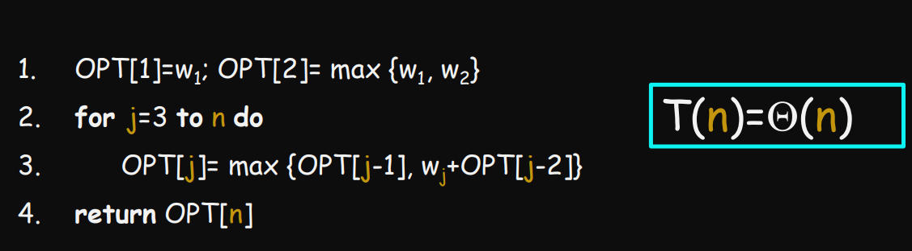
Ricostruire la soluzione
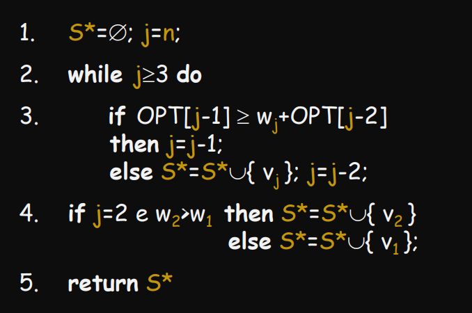
Interval scheduling con peso
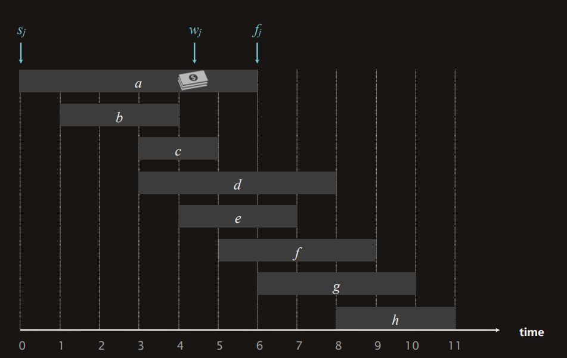
definizione
- Dati intervalli chiamati job
- Job inizia a e finisce a , e ha peso .
- Due job sono compatibili se non si sovrappongono
- Trovare il sottoinsieme di job compatibili di peso massimo
Soluzione dinamica
- ordino i job per finish time in modo crescente
- = più grande indice tale che job sia compatibile con job
sotto-problema :
= peso massimo di un qualsiasi sottoinsieme di job compatibili costituito solo dai job
- La soluzione cercata si trova in
- Caso 1. non seleziona :
- Allora l’ottimo di deriva dall’ottimo dei primi esimi job
- Caso 1. non seleziona :
- Caso 2. seleziona :
- Colleziona il costo di
- Non può usare i job incompatibili .
- Deve contenere una soluzione ottima per i job compatibili rimanenti 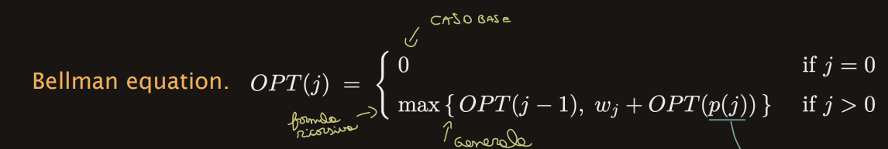 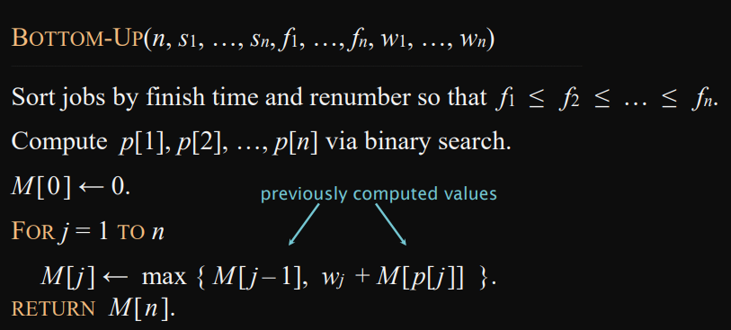
- 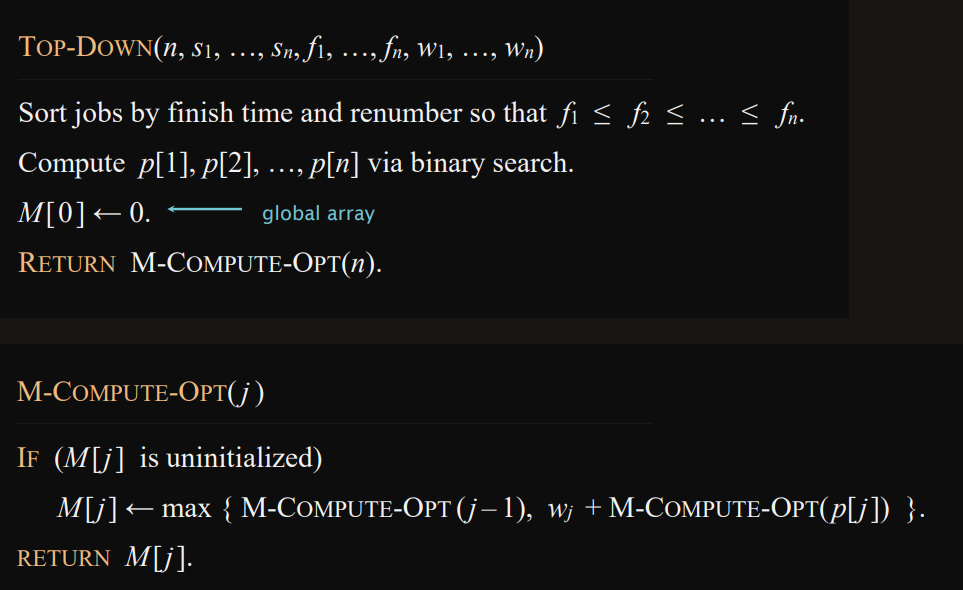 In pratica:
- Top-down può essere più veloce su input piccoli o quando molte scelte vengono potate.
- Bottom-up è più prevedibile e sicuro per input grandi.
Teoremi
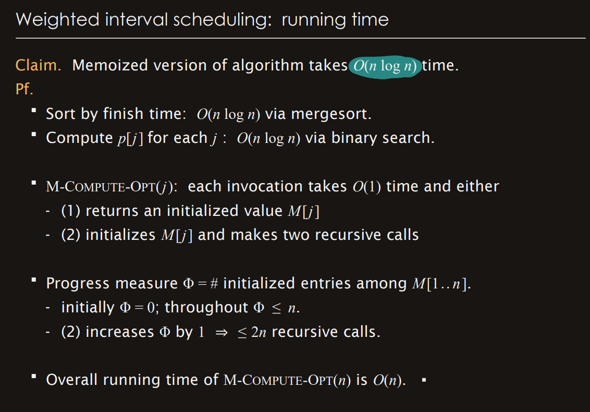
Longest increasing subsequences
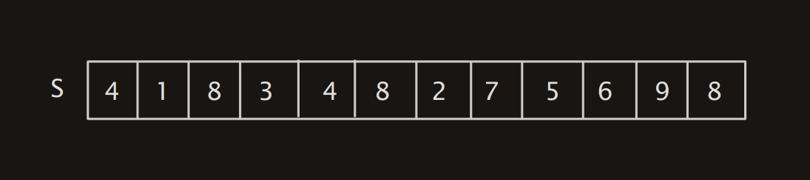
definizione
- Data una sequenza di oggetti
- L’oggetto ha valore
- Trovare una sotto-sequenza di cardinalità massima affinché per ogni coppia di oggetti con appartenenti alla sotto-sequenza vale che
Soluzione dinamica
Def sotto problema
- lunghezza della longest increasing subsequence di che termina con
- La soluzione cercata è il
- Il caso base è 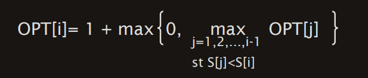
- such that=tale che 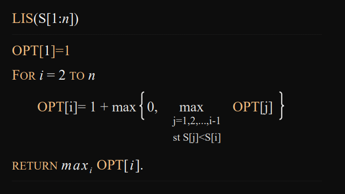
Segmented least squares
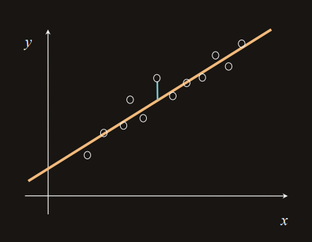 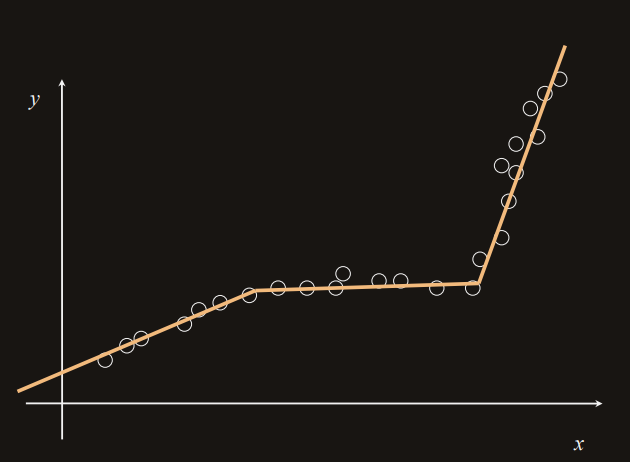
definizione di least Squares
Dati punti sul piano: Trovare una retta che minimizza la somma degli errori quadratici: 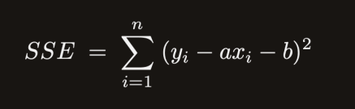 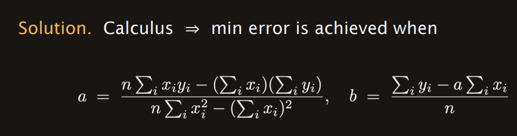
definizione di SEGMENTED least Squares
- I punti si trovano approssimativamente su una sequenza di diversi segmenti
- Dati punti sul piano: Trova una sequenza di linee che minimizza per una qualche costante , dove:
- E = somma delle somme degli errori quadratici di ogni segmento
- L = numero di segmenti
Soluzione dinamica
Def sotto problemi
- = costo minimo per i punti
- = SSE per i punti Per calcolare :
- L’ultimo segmento utilizza i punti per qualche
- Costo = 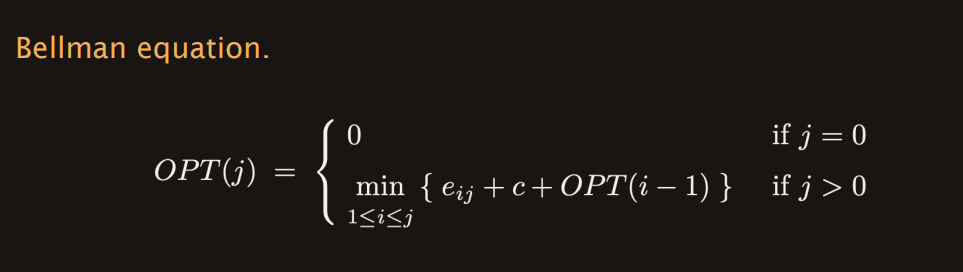 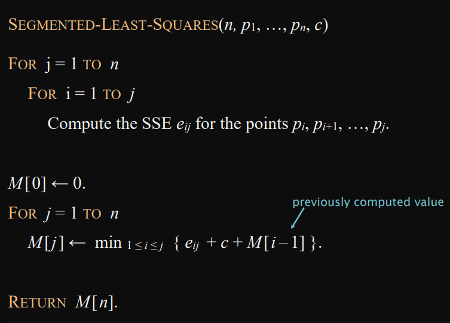 Precalcolando le sommatorie della formula di sopra il tempo diventa altrimenti è
Teoremi
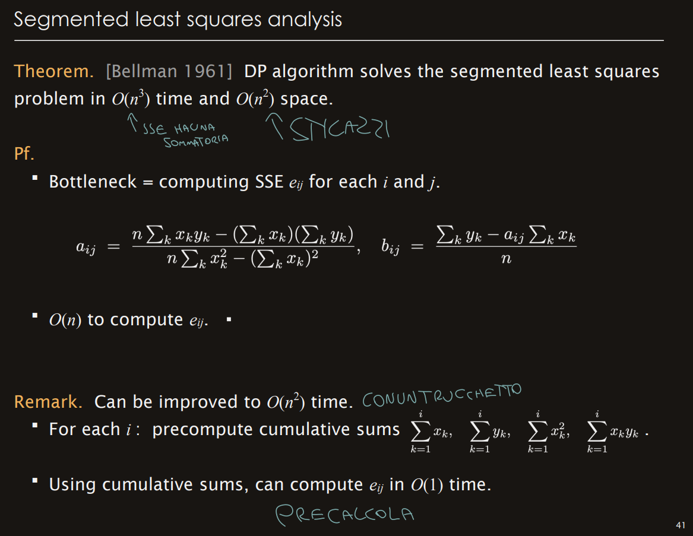
Knapsack problem
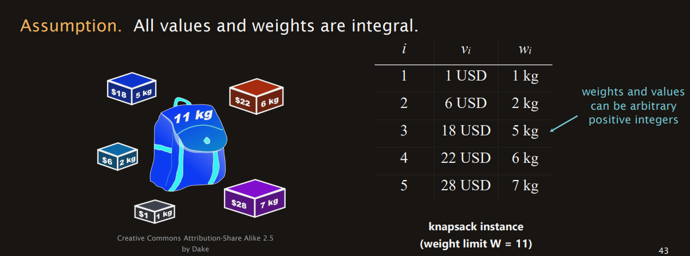
definizione
- Dati elementi:
- L’elemento fornisce un valore e pesa
- Valore di un sottoinsieme di oggetti = somma dei valori dei singoli oggetti
- Lo zaino ha peso limite
- Riempire lo zaino in modo tale da massimizzare il valore degli oggetti trasportati, ma non superare il limite
Soluzione dinamica
Def sotto problemi
- = valore ottimo del knapsack problem con oggetti con peso limite Goal:
- Caso 1. non seleziona :
- seleziona i migliori con peso limite
- Caso 2. seleziona :
- Colleziona il valore
- Nuovo peso limite =
- seleziona i migliori con nuovo peso limite 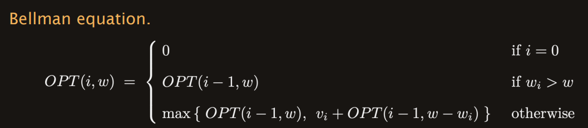 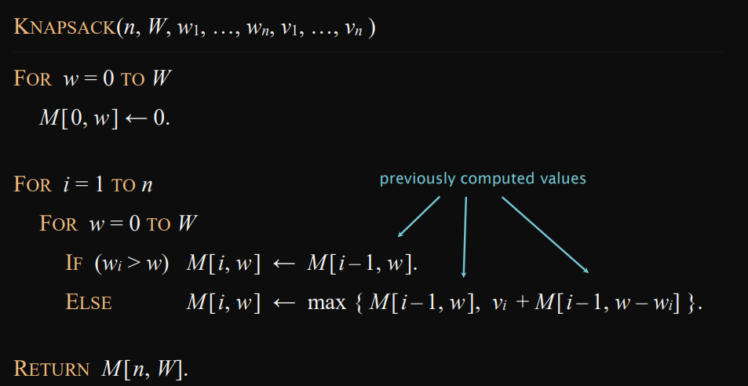
- tempo e spazio
Soluzione per il recupero
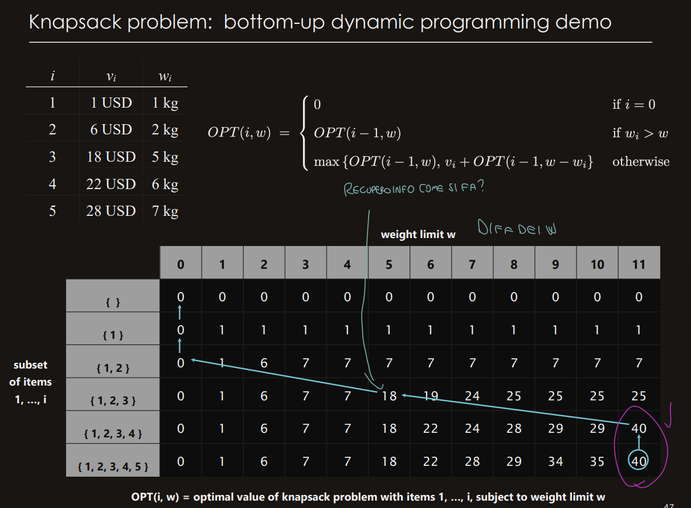
- trace back parte dalla fine della matrice dove si ha la soluzione ottima e prende di volta in volta la condizione massima tenendo conto che può prendere oppure no quel determinato peso
Teoremi
Sequence Alignment
definizione
definizione di edit distance
- operazioni di allineamento che portano a un costo minimo che include
- Gap penalty ; mismatch penalty
- Cost= somma delle penalità gap e mismatch sequence alignment definizione
- Date 2 stringhe trovare un allineamento di costo minimo
- Un allineamento è un insieme di coppie ordinate affinché ogni carattere appaia al massimo in una coppia e senza incroci
- Il costo di un allineamento è:
Soluzione dinamica
definisco sotto-problemi = costo minimo di allineamento delle stringhe di prefisso e
Goal. Caso 1. matcha
- Paga mismatch per + costo minimo per allineare e (costo può anche essere 0) Caso 2a. lascia non matchata
- Paga gap per + costo minimo per allineare e Caso 2b. lascia non matchata
- Paga gap per + costo minimo per allineare e
Soluzione per il recupero
per il recupero si limita a partire dal punto m,n ovvero entrambi alla lettera finale e da li si risale effettuando il traceback, si termina una volta raggiunto 0,0
se vai ↑ o a ← devi pagare la gap penalty
invece se vai in diagonale no
migliorie con Hirschberg’s algorithm
- si può ridurre il costo spaziale in
- per calcolare ci basta utilizzare due colonne per volta
- l’algoritmo inizia scegliendo la metà della stringa
- calcola in forward con e poi in backward invertendo gli archi calcola
- con parte intera inferiore
- Scegli
- Quel punto è la cella di taglio: il cammino ottimo passa da lì.
- poi da lì ricorsivamente andiamo a calcolare la prima metà e la seconda metà
- e
- e
Teorema
Shortest paths with negative weights
definizione
- Dato un grafo diretto , con lunghezza degli archi arbitraria ( può essere anche negativa) trovare un cammino minimo da un nodo sorgente o un nodo destinazione Definizione di vari lemma
- Se qualche cammino contiene un ciclo negativo allora non esiste un cammino minimo
- Se non ha cicli negativi allora esiste un cammino minimo che è un cammino semplice (ed ha archi)
Soluzione dinamica
definizione sotto-problemi = lunghezza del cammino minimo che usa archi Goal. per ogni nodo Caso 1. cammino minimo usa archi
- Caso 2. cammino minimo usa esattamente archi
- Se è il primo arco nel cammino minimo comporta un costo di
- quindi è adiacente a
- Poi seleziona il miglior cammino che usa archi
- complessità tempo e spazio
Bellman-Ford-Moore algorithm
- versione migliorata Manteniamo due array invece che una matrice:
- = lunghezza del cammino più breve che abbiamo trovato finora.
- = prossimo nodo nel cammino
Ottimizzazione della performance:
Se non viene aggiornato nella passata , non c’è motivo di considerare gli archi entranti in w nella passata i.
✅ convenzione implicita.
Il codice non lo dice, ma la logica del ciclo assicura che a iterazione stai effettivamente usando distanze valide fino a - ad ogni passata aggiorni i nodi che si trovano a quel determinato numero i di archi
- costo tempo e spazio
Bellman-Ford-Moore algorithm con controllo dei cicli negativi
Vari teoremi e lemmi
Lemma
-
Se qualche cammino contiene un ciclo negativo allora non esiste un cammino minimo
-
Se non ha cicli negativi allora esiste un cammino minimo che è un cammino semplice (ed ha archi)
-
Per ogni nodo è la stima della lunghezza di qualche cammino
-
Per ogni nodo è monotona non crescente
- viene aggiornata solo per valori minori
-
Dopo la passata , del cammino minimo che usa archi
-
Ogni ciclo diretto nel grafo dei successori è un ciclo negativo
-
Se esiste un ciclo negativo l’ultimo algoritmo realizzato lo segnala
Teorema
-
sulla complessità
-
Assumendo che non ci siano cicli negativi, Bellman-Ford-Moore calcola la lunghezza del cammino minimo in tempo e spazio
- Lemma 2+Lemma 5
-
Assumendo che non ci siano cicli negativi, Bellman-Ford-Moore calcola il cammino più corto per tutti i nodi in tempo e spazio
Max-flow e min-cut
definizione
Una rete di flusso è una tupla :
-
Grafo diretto con una sorgente s e un pozzo t
-
Capacità per ogni arco per risolvere questo problema dobbiamo definire cosa sono
-
st-cut
- partizione di nodi con e
- La capacità di un st-cut è la somma delle capacità degli archi che vanno da A in B
-
min-cut
- Trovare un taglio di capacità minima
- Il min-cut è quello che fornisce il limite più stretto, cioè il collo di bottiglia minimo del grafo.
-
st-flow
- Un st-flow è una funzione che soddisfa:
-
il valore di un st-flow è
-
max-flow
- problema dove si vuole trovare un flusso dal valore massimo
-
Residual network definizione
- Arco originale
- Flow
- Capacity
- Arco al contrario =
- undo del flusso inviato
- residual capacity:
- Arco originale
-
Residual network.
- Proprietà chiave : è un flusso valido in se è un flusso valido in Augmenting path definizione:
-
Un cammino aumentante è un cammino semplice nella rete residua
Def bottleneck capacity:
- La capacità di bottleneck di un cammino aumentante è la capacità minima residua di un arco in Proprietà chiave: Sia un flusso e un cammino aumentante in allora, dopo aver chiamato , l’ risultante è un flusso e )
Ford-Fulkerson
-
Inizia con per ogni arco
-
Trova un cammino nella rete residua
-
Aumenta il flusso lungo il cammino
-
continua a cercare cammini aumentanti nel grafo residuo, e aggiorna il flusso lungo quei cammini, finché non esistono più cammini da s a t nel grafo residuo.
-
Lemma del valore del flusso.
- Sia f un flusso qualsiasi e sia un taglio qualsiasi. Allora, il valore del flusso f è uguale al flusso netto attraversante il taglio
-
Dualità debole:
- Sia un qualsiasi flusso e sia un qualsiasi taglio .
- Allora, .
- Sia un qualsiasi flusso e sia un qualsiasi taglio .
-
Corollario:
- Sia f un qualsiasi flusso e un qualsiasi taglio. se = , allora è un max flow e è un min cut
-
Max-flow min-cut theorem:
- Il valore di un flusso massimo = capacità di un taglio minimo
-
Augmenting path theorem :
- Un flow è un max flow se non ha cammini aumentanti
-
Teorema:
- Dato un qualsiasi max flow f, possiamo calcolare il min cut (A,B) in O(m) tempo
ALTRA COSA FONDAMENTALE: il numero di cammini aumentanti può essere ESPONENZIALE rispetto all'input.
L’obiettivo principale è scegliere dei cammini aumentanti tali che
- possano essere trovati in modo efficiente (quindi in ),
- vengano eseguite poche iterazioni (e quindi pochi aumenti),
Per farlo possiamo sceglierli con
- una bottleneck capacity molto grande → così ogni aumento contribuisce MOLTO al flusso totale,
- pochi archi → riduci la probabilità di dover “tornare indietro”,
Verso l’algoritmo Partendo dai due punti precedenti, l’idea è questa
- Usiamo un parametro → è un valore grande,
- Costruisco un sottografo contenente SOLO gli archi che hanno capacità ,
- In questo modo ogni cammino aumentante nel nuovo grafo ha una bottleneck capacity ,
PSEUDOCODICE
- COSTO
Come scegliere il successivo cammino aumentante in Ford-Fulkerson? Scegli quello che usa meno archi (il più corto) → usa la BFS. >Scegliendo i più corti saturi velocemente gli archi “colli di bottiglia”
Max-flow Min-cut theorem
Algoritmi di approssimazione
definizione
- Un α-approximation algorithm per un problema di ottimizzazione è un algoritmo polinomiale che per tutte le istanze del problema produce una soluzione il cui valore è compreso entro un fattore α rispetto al valore di una soluzione ottima Minimization problem: voglio minimizzare un costo
- Per ogni soluzione restituita , Maximization problem: voglio massimizzare un valore
- Per ogni soluzione restituita ,
Load balancing
definizione
Date identiche macchine, jobs, job ha processing time .
- Job deve essere eseguito contiguamente su una macchina
- Una macchina può processare al più un job alla volta
- Assegnare ogni job a una macchina affinché il make span sia minimo Def load:
- Sia il sottoinsieme di job assegnati alla macchina .
- Il load della macchina è .
Def make span:
- Il make span è il valore massimo di load di ogni macchina
Soluzione List Scheduling Algo
- Considera i job in un qualche ordine fisso
- Assegna il job alla macchina il cui carico è finora il più piccolo
- Complessità:
- Usando una coda con priorità per i carichi
Dimostrazioni e lemma
Load balancing LPT(Longest Processing Time)
definizione
- Ordina jobs in ordine decrescente di tempo di processione
- ciò lo rende molto più vicino alla soluzione ottima
Teoremi
k-center problem 2-approximation
definizione
Problema dei k-centri (2-approximation)
DEFINIZIONE
Dati un set di
nsiti e un interok. selezionarekcentriCaffinché la distanza tra un sito e il centro più vicino sia minima.
r(C)indica la distanza peggiore tra tutte ledist(s_i, C)Nel senso
- calcola TUTTE le distanze dei siti dai centri più vicini
- prendi la peggiore → quella è
r(C)- così tu sai che il minimo raggio di copertura per coprire tutti i siti è questo valore qui
Algoritmo greedy
Sceglie k volte il sito più lontano da qualsiasi centro finora creato, e lo usa come prossimo centro.
L’algoritmo greedy potrebbe non essere ottimo ma la sua soluzione non si discosta più del doppio rispetto all’ottimo.
DIMOSTRAZIONE
- Per assurdo ipotizziamo che l’ottimo sia molto più piccolo
- ossia il centro ottimale copre con sfere grandi la metà di quelle del greedy
- Costruiamo sfere intorno ai centri trovati , con raggio
- in questa nuova sfera deve esserci ALMENO un centro ottimo altrimenti l’ipotesi sarebbe sbagliata
- Tutte le sfere, per costruzione, sono disgiunte (non si sovrappongono) e quindi in ognuna c’è ESATTAMENTE un centro ottimale
- quindi c’è una corrispondenza tra i centri di
Ce quelli diC*, in particolare
- Ora colleghiamo un sito
sal suo centro
- prendiamo un sito
s- sia il centro ottimo più vicino a
s- e sia il centro di
Cche “si abbina a ” (ossia che si trova nella stessa sfera)- LA DISTANZA DI
sdal centro trovato dal greedy soddisfa
- la prima parte è al massimo , per definizione
- la seconda parte anche è al massimo , perché i due centri si trovano nella stessa sfera
- QUINDI la distanza totale è
- E QUESTO VALE PER OGNI SITO
s
RIDUZIONI POLINOMIALI
Definizione
Una riduzione polinomiale è un metodo per trasformare un problema in un altro problema , in modo che:
- qualsiasi istanza di possa essere risolta tramite:
- un numero polinomiale di operazioni standard, più
- un numero polinomiale di chiamate a un “oracolo” che risolve . Si scrive:
- risolvere Y implica poter risolvere X in tempo polinomiale
3 proprietà importanti
- Progettazione di algoritmi:
Se e è risolvibile in tempo polinomiale, allora anche lo è. - Dimostrare difficoltà (intractability):
Se e non è risolvibile in tempo polinomiale, allora neanche lo è. - Equivalenza:
Se e , allora .
Significa che hanno la stessa complessità polinomiale (si risolvono in polinomiale se e solo se l’altro lo è).
Esempi di riduzioni
1. Independent Set con Vertex Cover
- descriviamo prima il problema dell’indipendent set Independent Set (IS): Dato un grafo e un intero , esiste un sottoinsieme di vertici non adiacenti tra loro?
- problema del Vertex Cover Vertex Cover (VC): Dato e un intero , esiste un sottoinsieme di vertici che copre tutti gli archi?
Vogliamo dimostrare che .
(⇒) Da Independent Set a Vertex Cover
- Supponiamo che sia un IS di dimensione .
- Allora ha dimensione .
- Consideriamo un arco
- Poiché è indipendente, non può contenere entrambi i vertici .
- Quindi almeno uno dei due appartiene a .
- Dunque è un vertex cover di dimensione
(⇐) Da Vertex Cover a Independent Set
- Supponiamo che sia un VC di dimensione .
- Allora ha dimensione .
- Consideriamo un arco .
- Poiché è un VC, almeno uno tra è in .
- Quindi non possono essere entrambi in .
- Dunque è un independent set di dimensione .
2. Set Cover con Vertex Cover
- descriviamo prima il problema del Set Cover
- Set Cover (SC): Dato un insieme universo , una collezione di sottoinsiemi , e un intero , esistono al più sottoinsiemi che coprono tutto ?
Vogliamo dimostrare che .
Costruzione della riduzione
Dato un grafo e un intero :
- Universo:
- Famiglia di sottoinsiemi:
Per ogni vertice , definiamo: - Parametro:
Manteniamo lo stesso valore .
Così otteniamo un’istanza di Set Cover
(⇒) Se ha un Vertex Cover di dimensione
- Supponiamo che sia un VC con .
- Consideriamo
- Ogni arco è coperto da almeno un vertice in , quindi è un set cover di dimensione .
(⇐) Se ha un Set Cover di dimensione
- Supponiamo che sia un set cover di dimensione .
- Sia .
- Poiché ogni arco appartiene ad almeno un sottoinsieme , significa che copre quell’arco.
- Quindi è un VC di dimensione .
3. 3-SAT con Independent Set
- descriviamo prima il problema del 3-SAT
- 3-SAT: Formula booleana in CNF con clausole di 3 letterali ciascuna. La formula è soddisfacibile?
Vogliamo dimostrare che .
Costruzione della riduzione
- Nodi:
Per ogni clausola della formula, aggiungiamo 3 nodi (uno per ogni letterale). - Archi interni:
I 3 nodi di una clausola vengono collegati in un triangolo.
→ garantisce che al massimo 1 letterale possa essere scelto dall’insieme indipendente. - Archi tra clausole:
Collegare ogni letterale con la sua negazione (es: con ).
→ impedisce di selezionare contemporaneamente un letterale e la sua negazione. - Parametro: .
Dimostrazione
(⇒) Se è soddisfacibile
- Esiste una assegnazione che rende vera ogni clausola.
- Per ciascuna clausola, scegliamo un letterale che risulta vero.
- Questi nodi non saranno collegati fra loro (per costruzione), quindi formano un independent set di dimensione .
(⇐) Se contiene un independent set di dimensione
- Ogni triangolo rappresenta una clausola.
- Per avere un IS di dimensione , dobbiamo scegliere esattamente un nodo per triangolo.
- I letterali scelti non possono essere contraddittori (perché IS esclude coppie collegate).
- Assegniamo true a quei letterali → tutte le clausole sono soddisfatte.
- Dunque è soddisfacibile.
-
Transitività: Se .
→ Esempio: -
P: problemi di decisione per i quali esiste un algoritmo polinomiale che li risolve.
→ Sono i problemi “facili da risolvere”. -
NP: problemi di decisione per i quali esiste un certificatore polinomiale.
→ Non sappiamo se sono facili da risolvere, ma se qualcuno ci dà una soluzione candidata (certificato), possiamo verificarla velocemente. -
EXP: problemi di decisione per i quali esiste un algoritmo esponenziale che li risolve.
→ In pratica: anche se non troviamo algoritmi migliori, con una brute force in tempo esponenziale si riescono a risolvere.